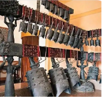
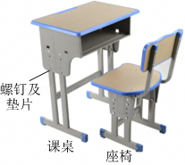
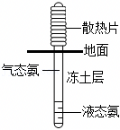
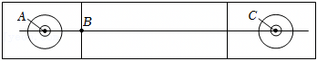
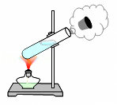

2025年北京市中考物理试卷 · 选择题 第6、7、8、9、10题
6．（2分）如图所示的是编钟演奏的情境，下列说法正确的是（ ）

A．敲击编钟时发出的声音是空气振动产生的
B．听众听到的编钟声音，是通过空气传播的
C．编钟发出的声音可以在真空中传播
D．用大小不同的力敲击同一只编钟的同一位置，发出声音的音调不同
7．（2分）如图所示，课桌和座椅放在水平地面上，下列说法正确的是（ ）

A．课桌的高度约为1.5m
B．螺钉下面放置垫片是为了增大压强
C．课桌受到的支持力与它受到的重力是一对相互作用力
D．座椅受到的重力与地面对它的支持力是一对平衡力
8．（2分）在青藏铁路工程中，为了保证多年冻土区路基的稳定性，铁路两侧竖立了许多热棒。如图所示，热棒是封闭的中空长棒，下端插在冻土中，上端装有散热片，里面填充低沸点的液态氨作为“制冷剂”。在寒冷的季节，空气温度低于冻土层温度，制冷剂作为热的“搬运工”，通过液态氨与气态氨的相互转化，使冻土层温度降低、厚度增加，这样即使到了暖季热棒不再工作，冻土也不会完全融化，冻土层因温度变化对路基产生的影响变小。关于热棒在工作过程中，下列说法正确的是（ ）

A．液态氨吸收冻土的热量变为气态氨是升华现象
B．气态氨上升到热棒上端放出热量液化为液态氨
C．热棒的作用是把热量从空气中传到冻土中
D．冻土层从热棒吸收热量，厚度增加
9．（2分）如图所示是冰壶场地的示意图，水平冰面粗糙程度相同。某同学用水平推力使冰壶从A点向前运动，到B点时松手，冰壶滑行到C点静止。下列说法正确的是（ ）

A．冰壶从B到C的过程，该同学对冰壶做了功
B．冰壶能够从B运动到C，是由于它受到了惯性作用
C．冰壶从B到C的过程先加速后减速，机械能没有转化为内能
D．冰壶在AB段所受的摩擦力等于在BC段所受的摩擦力
10．（2分）在试管内装些水，用橡胶塞塞住管口，将水加热一段时间，橡胶塞被推出，管口出现大量“白气”，如图所示。下列说法正确的是（ ）

A．水变热的过程，其内能是通过做功的方式改变的
B．橡胶塞被推出的过程中，水的内能全部转化为塞子的机械能
C．水蒸气推出橡胶塞的过程中，水蒸气的内能减小
D．管口出现的“白气”是试管内的水直接汽化形成的